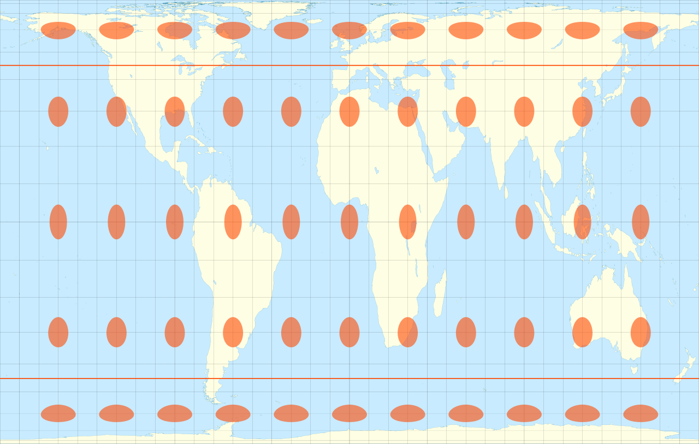
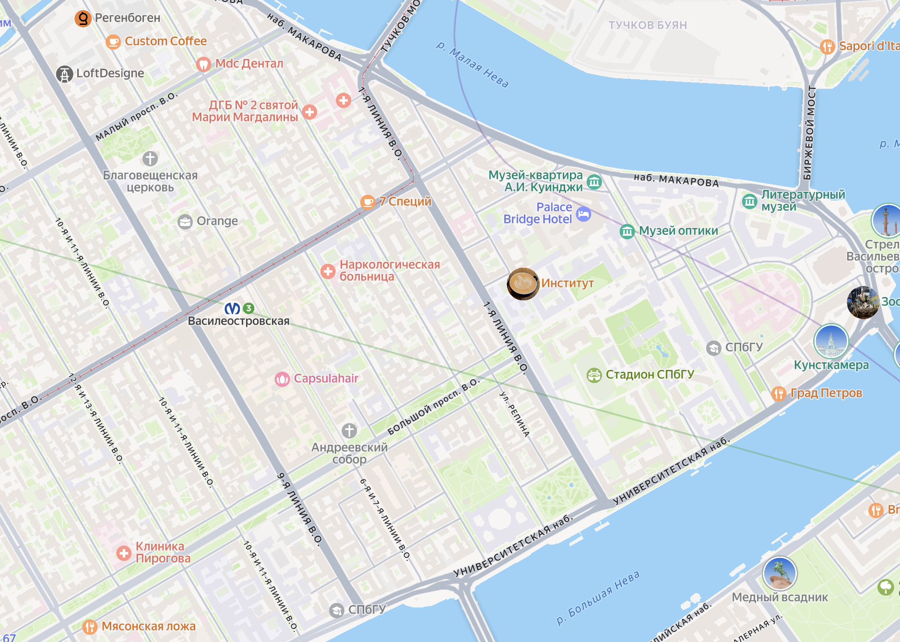

Общие понятия картографии
Геоинформационные системы. Лекция 3
Элементы карты

Источник: https://arcreview.esri-cis.ru/2009/03/11/mapping-basics/
Обманывать при помощи географических карт не только легко, но еще и очень важно. Для того чтобы передать наполненные смыслом взаимосвязи в сложном трехмерном мире на листе бумаги или экране, карта должна искажать окружающую реальность. Все географические карты лгут4


Классификация по виду проецирующей поверхности:
- азимутальные проекции используют плоскость, которая касается поверхности Земли в одной точке. Именно эта точка не будет иметь никаких искажений, при отдалении от нее к краю плоскости искажения, как правило, возрастают;

- конические проекции, которые вписывают объемное тело в конус, касающийся тела по одной линии. Линия касания является линией отсутствия искажений, в то время как при удалении от нее эти искажения возрастают, при этом, при приближении к вершине конуса, искажение происходит в сторону уменьшения, а при приближении к основанию - в сторону увеличения. Впоследствии конус разворачивается на плоскость;

- цилиндрические проекции используют в качестве поверхности проецирования цилиндр, касающийся поверхности объемного тела по одной линии. Эта линия будет определять истинный масштаб карты и будет линией отсутствия искажений, при удалении от которой искажения будут возрастать;


Классификация по расположению точки проецирования:
- в гномонических проекциях точка проецирования расположена в центре масс Земли;

- стереографическая проекция - центр проецирования расположен на противоположном полюсе;

- центр проецирования внешней проекции расположен на диаметре, на некотором расстоянии;

- ортографическая проекция - центр проецирования расположен на бесконечном удалении от Земли.

Немного об искажениях проекций





На картах вы, как правило, можете увидеть какой-то из этих масштабов:
численный - масштаб указан безразмерной дробью, в числителе которой всегда единица, а в знаменателе - число, показывающее степень уменьшения, например, 1:1000 или 1:500;
графический в виде графика для измерение длин линий, чаще всего вы видите на картах линейный графический масштаб;

- именованный, указывающий соотношение длин линий на карте и на местности, например, в 1 см 1 км или в 1 см 50 км.
Генерализация содержания
По большей части она относится к способам отображения количественной информации: способ классификации и выбор цветовой палитры.

Источник — Самсонов Тимофей. «Генерализация пространственных данных и ее картографические приложения» https://dissovet.msu.ru/dissertation/3365
Но к ней также относится отбор отображаемых на карте слоев и объектов.


Генерализация геометрии

Источник: https://cartetika.ru/tpost/oim9ppbef1-generalizatsiya-v-kartografii-teoriya-kr
Сноски
ГОСТ 21667-76 Картография. Термины и определения (с Изменением 1, 2) https://docs.cntd.ru/document/1200006865
A Strategic Plan for the International Cartographic Association 2003-2011 - https://icaci.org/files/documents/reference_docs/ICA_Strategic_Plan_2003-2011.pdf
Храмов В.М. Картография (лекции) - https://geo.bsu.by/images/pres/cart/carto/carto01.pdf
Марк Монмонье ; перевод с английского Михаила Попова; научный редактор А. О. Захаров. - Москва : КоЛибри: Азбука-Аттикус, 2021.
Иванов А.Г., Загребин Г.И. Атлас картографических проекций на крупные регионы Российской федерации: учебно-наглядное издание. – М.: МИИГАиК, 2012. – 19 с.: ил.
Берлянт. «Картография», 2014